Simulate attitude determination for a momentum bias spacecraft.
At this point we do not include any real actuators or sensors. The orbit is modeled and the spacecraft controls errors with respect to the LVLH frame. ------------------------------------------------------------------------- Specification ------------------------------------------------------------------------- Ours is a Gravity gradient stabilization satellite with two analog medium sun sensors and one magnetometer for attitude knowledge. We are using Magnetorquer rods as our controller which is basically a PD controller and also a small momentum wheel with angular momentum of 1 Nms and with constant speed on the pitch axis to counter the external disturbance.
The nadir pointing accuracy required is < 5 degrees and the attitude errors in all the three axes should be less than 3 degrees. The inertia in the three directions are Ix=120, Iy=120 and Iz=1.3. The orbit radius is 6718+352 Kms (low earth orbit satellite). The inclination is 28.45 deg.
The damping ratios and natural frequencies are:
Tach loop:
zeta = 0.7621
wN= 0.5
Pitch and Roll loop: zeta = 0.7621 wN = 0.009
Yaw loop:
zeta = 1.0
wN = 0.15
------------------------------------------------------------------------- See also IC623X3, PDDesign, PIDesign, QForm, QLVLH, QMult, QPose, Constant, NPlot, Plot2D, TimeGUI, RK4, JD2000, SunMagAttDet, TOrbit, RVFromKepler, MagField, SunV1, FPSensors -------------------------------------------------------------------------
Contents
- Global for the time GUI
- Constants
- The control sampling period and the simulation integration time step
- Number of sim steps
- Plot every nPMax steps
- spacecraft with respect to the sun projection in the orbit plane
- Spacecraft Inertias
- Wheel spin axis unit vector
- Design the control loops
- Tach loop
- Attitude Loops
- Initialize the control system
- The sun sensors along +X and -X
- Plotting arrays
- Time statistics function
- Initialize the time display
- Magnetic field
- Generate the orbit
- el = [a,i,W,w,e,M]. The spacecraft is in LEO orbit
- Initial conditions at equinox
- Initial conditions
- Get a step response
- Run the simulation
- Plotting
%-------------------------------------------------------------------------- % Copyright 1999, 2016 Princeton Satellite Systems, Inc. All rights reserved. %-------------------------------------------------------------------------- % Since version 5.5 (2003) % 2016.1 Switch to newer IGRF11 model (from 1995 data) for the Earth %--------------------------------------------------------------------------
Global for the time GUI
%------------------------ global simulationAction simulationAction = ' ';
Constants
%---------- degToRad = Constant('deg to rad'); radToDeg = Constant('rad to deg');
The control sampling period and the simulation integration time step
%--------------------------------------------------------------------
tSamp = 2;
Number of sim steps
%--------------------
nSim = 3000;
tEnd = nSim*tSamp;
Plot every nPMax steps
%---------------------- nPMax = 10; nPlot = nSim/nPMax; % Sun angle with respect to the orbit plane and location of the
spacecraft with respect to the sun projection in the orbit plane
%---------------------------------------------------------------- rOrbit = 6718 + 352; % This isn't used yet
Spacecraft Inertias
%-------------------- inr = IC623X3( [120 120 1.3 0 0 0] ); inrRWA = 0.01; % A guess invInr = inv(inr);
Wheel spin axis unit vector
%---------------------------- uW = [0;1;0]; %-------------------------------------------------------------------------------
Design the control loops
%-------------------------------------------------------------------------------
Tach loop
%----------
[aTL,bTL,cTL,dTL] = PIDesign( 0.7621, 0.5, inrRWA, tSamp );
Attitude Loops
%--------------
[aRoll ,bRoll, cRoll, dRoll] = PDDesign( 0.7621, 0.009, 0.09, inr(1,1), tSamp );
[aPitch,bPitch,cPitch,dPitch] = PDDesign( 0.7621, 0.009, 0.09, inr(2,2), tSamp );
[aYaw, bYaw, cYaw, dYaw] = PDDesign( 1.0, 0.15, 1.5, inr(3,3), tSamp );
Initialize the control system
%----------------------------- xTL = zeros(size(aTL, 1),1); xRoll = zeros(size(aRoll, 1),1); xPitch = zeros(size(aPitch,1),1); xYaw = zeros(size(aYaw, 1),1); tC = [0;0;0]; wBias = 100; % Momentum wheel bias rate xEst = [10;10;10]*pi/180; rEst = [0.1 0.1 0.1 0.1 0.1 0.1 0.1]; fScale = 1; p = 10*eye(3);
The sun sensors along +X and -X
%----------------------------------------------------------------------- qBToS = [cos(pi/4) cos(pi/4);... 0 0;... sin(pi/4) -sin(pi/4);... 0 0]; fOV = [120 120;120 120]*degToRad; uS = [0 0;0 0;1 1];
Plotting arrays
%----------------
cPlot = zeros( 4,nPlot);
ePlot = zeros( 3,nPlot);
tPlot = zeros( 1,nPlot);
xPlot = zeros( 8,nPlot);
pPlot = zeros( 3,nPlot);
vPlot = zeros( 3,nPlot);
sPlot = zeros( 2,nPlot);
Time statistics function
------------------------
ratioRealTime = 0; dTSim = tSamp; t = 0; nP = 0; kP = 0;
Initialize the time display
%---------------------------- tToGoMem.lastJD = 0; tToGoMem.lastStepsDone = 0; tToGoMem.kAve = 0; ratioRealTime = 0; [ ratioRealTime, tToGoMem ] = TimeGUI( nSim, 0, tToGoMem, 0, dTSim, 'MagSim' );
Magnetic field
%--------------- magFieldData = load('IGRF11');
Generate the orbit
%-------------------
tOrbit = (0:(nSim-1))*dTSim;
el = [a,i,W,w,e,M]. The spacecraft is in LEO orbit
%----------------------------------------------------
[rECI, vECI] = RVFromKepler( [rOrbit 0 0 0 0 pi/2], tOrbit );
Initial conditions at equinox
%------------------------------
jD = JD2000 + tOrbit/86400 + 1000;
Initial conditions
%------------------- % q w wRWA x = [ QLVLH( rECI(:,1), vECI(:,1) ); [0;0;0]; 100 ]; uSun = SunV1( jD, rECI );
Get a step response
%--------------------
tDist = [1;1;1]*1.e-6;
tWF = 0.001;
Run the simulation
%------------------ for k = 1:nSim qECIToBody = x(1:4); % Display the status message %--------------------------- [ ratioRealTime, tToGoMem ] = TimeGUI( nSim, k, tToGoMem, ratioRealTime, dTSim ); qLVLH = QLVLH( rECI(:,k), vECI(:,k) ); % The local vertical frame % The magnetic field %------------------- b = MagField( rECI(:,k), jD, 5, magFieldData.g, magFieldData.h ); bLVLH = QForm( qLVLH, b ); bMeas = QForm( qECIToBody, b ); uSunLVLH = QForm( qLVLH, uSun(:,k) ); sunSensorData = FPSensors( qECIToBody, qBToS, [uSun(:,k) uSun(:,k)], fOV, 1 ); % Attitude determination %----------------------- catalog = [bLVLH uSunLVLH uSunLVLH]; [xEst, p] = SunMagAttDet( xEst, p, rEst, qBToS, bMeas, sunSensorData, catalog, fScale ); % qLVLH transforms from ECI to LVLH % We want LVLH to Body %----------------------------------- qLVLHToBody = QMult( QPose( qLVLH ), qECIToBody ); if( qLVLHToBody(1) < 0 ) qLVLHToBody = - qLVLHToBody; end roll = -2*qLVLHToBody(2); pitch = -2*qLVLHToBody(3); yaw = -2*qLVLHToBody(4); wTach = x(8); % Perfect tachometer % The attitude control loops %-------------------------- tC(1) = -cRoll*xRoll - dRoll*roll; xRoll = aRoll*xRoll + bRoll*roll; tC(2) = -cPitch*xPitch - dPitch*pitch; xPitch = aPitch*xPitch + bPitch*pitch; tC(3) = -cYaw*xYaw - dYaw*yaw; xYaw = aYaw*xYaw + bYaw*yaw; % The RWA Tach Loop %------------------ wError = wTach - wBias; tW = -dTL*wError - cTL*xTL; xTL = aTL*xTL + bTL*wError; %------------------------------------------------------------------------------- % Update the equations of motion %------------------------------------------------------------------------------- x = RK4( @FMagSim, x, dTSim, t, inr, invInr, tDist + tC, inrRWA, uW, tW+tWF ); t = t + dTSim; jD = jD + dTSim/86400; % Plotting %-------- if( nP == 0 ) kP = kP + 1; xPlot(:,kP) = x; tPlot(1,kP) = t; cPlot(:,kP) = [tC;tW]; ePlot(:,kP) = [roll;pitch;yaw]*radToDeg; rVPlot(:,kP) = [rECI(:,k);vECI(:,k)]; bPlot(:,kP) = b; pPlot(:,kP) = diag(p)*radToDeg^2; vPlot(:,kP) = xEst*radToDeg; sPlot(:,kP) = sunSensorData.valid'; nP = nPMax - 1; else nP = nP - 1; end % Time control %------------- switch simulationAction case 'pause' pause simulationAction = ' '; case 'stop' return; case 'plot' break; end end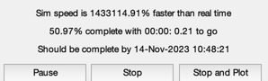
Plotting
%--------- xLbl = 'Time (sec)'; j = 1:kP; tPlot = tPlot(j); Plot2D( tPlot, xPlot(1:4,j),xLbl,['Qs';'Qx';'Qy';'Qz'],'Quaternion') Plot2D( tPlot, xPlot(5:7,j),xLbl,['Wx';'Wy';'Wz'],'Body Rates') Plot2D( tPlot, xPlot(8,j), xLbl,'Omega (rad/sec)','Momentum Wheel') Plot2D( tPlot, cPlot(:,j), xLbl,['X';'Y';'Z';'W'],'Control Torque Demand') Plot2D( tPlot, ePlot(:,j), xLbl,['Roll (deg)';'Pitch (deg)';'Yaw (deg)'],'Measured Attitude Errors') Plot2D( tPlot, rVPlot(:,j), xLbl,['x ECI ';'y ECI ';'z ECI ';'vX ECI';'vY ECI';'vZ ECI'],'Orbit') Plot2D( tPlot, bPlot(:,j), xLbl,['bX ';'bY ';'bZ '],'Magnetic Field') Plot2D( tPlot, pPlot(:,j), xLbl,['pX ';'pY ';'pZ '],'Covariance') Plot2D( tPlot, vPlot(:,j), xLbl,['angleX ';'angleY ';'angleZ '],'Estimated angles') Plot2D( tPlot, sPlot(:,j), xLbl,['SSA1 ';'SSA2 '],'Valid Sun Sensor') %-------------------------------------- % PSS internal file version information %-------------------------------------- % $Date$ % $Id: 619fc9b2efb3212eb541fef8e0272da2ed343d94 $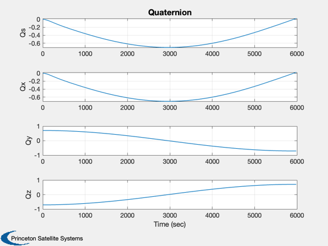 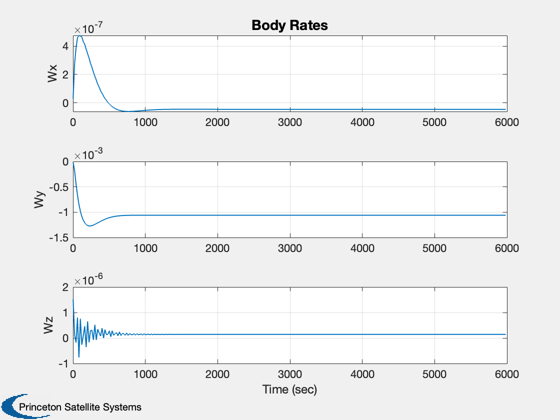 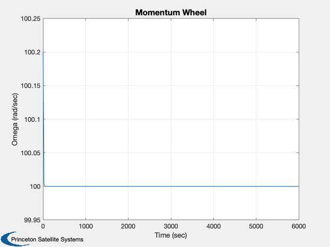 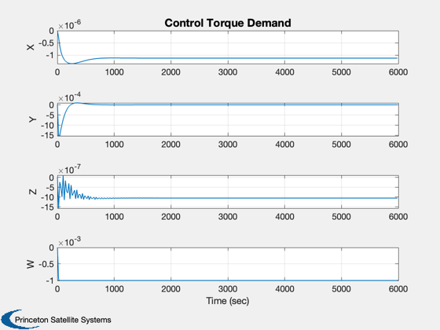 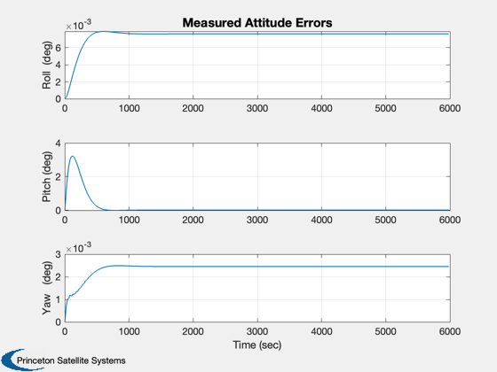
 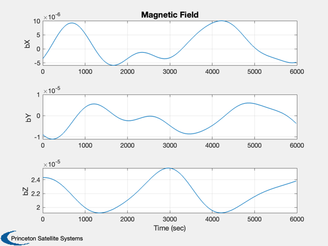 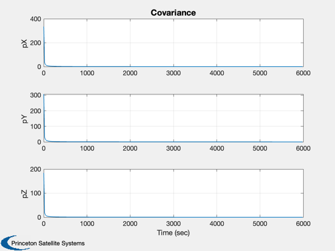 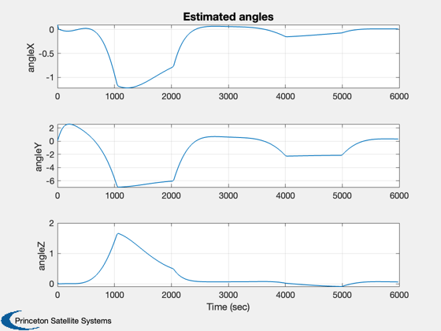 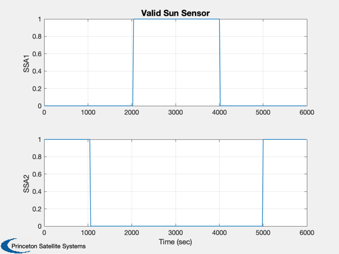
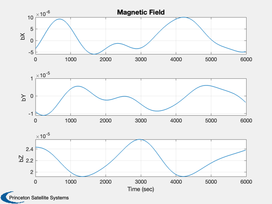 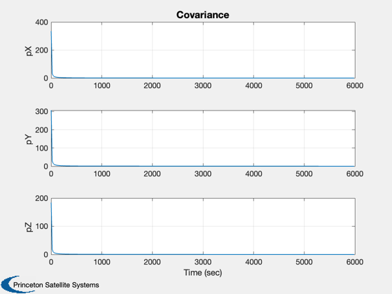 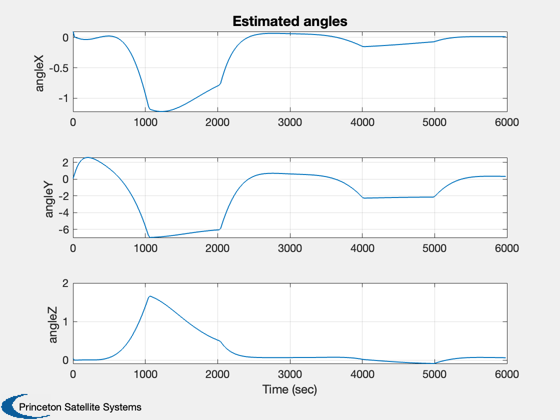 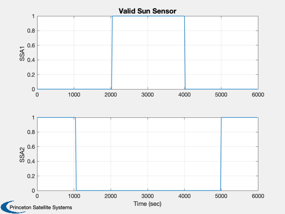